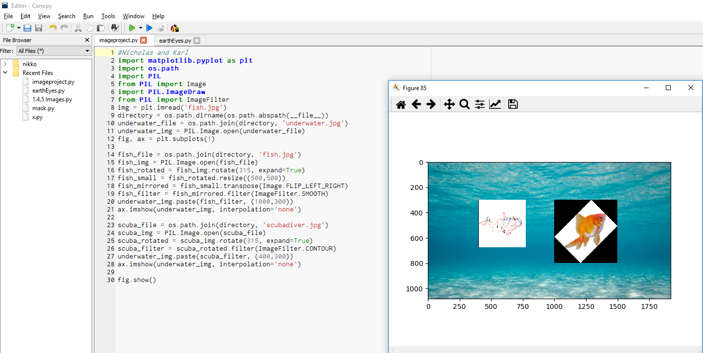

Home
Portfolio
About Me
Portfolio


This was my app inventor project that I created with my partner,
Bryan Tran. This app is a DJ Pad that allows the user to interact with
various different buttons that each play their own sounds in order
for the user to create music.

Here is my PLTW image project that I worked on with Karl along with a list of changes made:
Resized the fish
Pasted fish onto water background
Rotated fish 45 degrees
Flipped image across y axis
Pasted scuba diver
Rotated diver 45 degrees
Applied contour filter
Applied edge filter